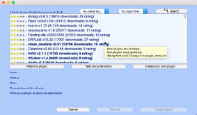
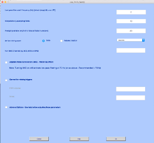

EEG-fMRI Data Cleaning & Forward Solution
Gradient and Ballistocardiogram Removal Procedure
The purpose of this procedure is to outline the steps necessary for cleaning magnetic resonance (MR) and ballistocardiogram (BCG) artifacts from EEG data obtained during simultaneous EEG-fMRI recordings. The efficacy of multimodal imaging can be significantly compromised without proper artifact removal. Hence, this procedure is crucial for improving the quality and interpretability of EEG data that is collected in conjunction with fMRI studies, particularly in clinical and research settings in the field of medicine.
High-Level Overview of EEG-fMRI Artifact Cleaning Procedure
The procedure for cleaning MR and BCG artifacts from EEG data can be summarized in three main steps:
Artifact Identification: Detecting and marking the artifacts within the EEG data that stem from MR and BCG sources.
Artifact Removal: Implementing algorithms and techniques designed to exclude or minimize the intrusion of identified artifacts.
Data Validation: Assessing the cleaned EEG data to confirm the efficacy of artifact removal and ensuring the integrity of the signal for further analysis.
This high-level overview provides a foundational understanding of the procedural steps involved without delving into complex technicalities.
Data Preparation
Create the directory BHBMEG<subject_id>
Use the subject id from the MR scanner EEG-fMRI session.
cd BHBMEG<subject_id>Put the MRI data in BIDS format
Put the MRI data in BIDS format using your favourite BIDS conversion tool. I recommend dcm2bids. You can find more information at https://unfmontreal.github.io/Dcm2Bids/3.1.1/. Be sure that the subject is the root BIDS directory (i.e., only one subject in the BIDS directory) to keep the analysis as a N = 1 study.
Install anaconda if you haven’t already done so. Go to https://www.anaconda.com/download. Follow the install directions for your workstation and operating system.
Open a Terminal window. Check your Python version. At the command prompt, type
which pythonIf the command should return a path with anaconda3 in it. For example,
/Users/lj/anaconda3/bin/pythonCreate a python environment for dcm2bids. In a text file called environment.yml copy the following:
name: dcm2bids\
channels:\
- conda-forge\
dependencies:\
- python\>=3.7\
- dcm2niix\
- dcm2bidsand in Terminal create the environment:
conda env create --file environment.yml*Activate your new python environment. By running
conda activate dcm2bidsTest your dcm2bids installation.
dcm2bids *\--help*You should get the help file for dcm2bids:
usage: dcm2bids [-h] -d DICOM_DIR [DICOM_DIR ...] -p PARTICIPANT [-s SESSION]
-c CONFIG [-o OUTPUT_DIR] [_--auto_extract_entities]_ [_--bids_validate] [--force_dcm2bids] [--skip_dcm2niix]_ [_--clobber] [-l {DEBUG,INFO,WARNING,ERROR,CRITICAL}] [-v]_Reorganising NIfTI files from dcm2niix into the Brain Imaging Data Structure
options:
-h, _--help show this help message and exit_ -d DICOM_DIR [DICOM_DIR ...], _--dicom_dir DICOM_DIR [DICOM_DIR ...]_ DICOM directory(ies) or archive(s) (tar, tar.bz2, tar.gz or zip).
-p PARTICIPANT, _--participant PARTICIPANT_ Participant ID.
-s SESSION, _--session SESSION_ Session ID. []
-c CONFIG, _--config CONFIG_ JSON configuration file (see example/config.json).
-o OUTPUT_DIR, _--output_dir OUTPUT_DIR_ Output BIDS directory. [/Users/lj] _--auto_extract_entities_ If set, it will automatically try to extract entityinformation [task, dir, echo] based on the suffix and datatype. [False] _--bids_validate If set, once your conversion is done it will check if your output folder is BIDS valid. [False]_ bids-validator needs to be installed check: https://github.com/bids-standard/bids-validator_#quickstart_ _--force_dcm2bids Overwrite previous temporary dcm2bids output if it exists._ _--skip_dcm2niix Skip dcm2niix conversion. Option -d should contains NIFTI and json files._ _--clobber Overwrite output if it exists._ -l {DEBUG,INFO,WARNING,ERROR,CRITICAL}, _--log_level {DEBUG,INFO,WARNING,ERROR,CRITICAL}_ Set logging level to the console. [INFO]
-v, _--version Report dcm2bids version and the BIDS version._Documentation at https://unfmontreal.github.io/Dcm2Bids/Make a directory for your BIDS root directory:
mkdir BIDS\
cd BIDSCreate the scaffold for your BIDS root directory:
dcm2bids_scaffold -o BHBMEG<subject_id\>
cd BHBMEG<subject_id>Download your MRI data from XNAT for BHBMEG<subject_id>.
Put the MRI data in the sourcedata folder created by the scaffold.
unzip \<xnat-username\>-\<download-date\>\_\<download-time\>.zip -d
sourcedata/For example,
unzip lwilliams-20240109_134304.zip -d sourcedata/Change the folder name to mri.
mv ./sourcedata/\<xnat-username\>-\<download-date\>\_\<download-time\>
mriFor example,
mv ./sourcedata/ lwilliams-20240109_134304 mriMove any additional MRI sessions into the mri folder (e.g., the structural scans from a corresponding BHBEP session).
Create a new .config file in the code folder of your subject’s BIDS folder. You can use any code editor, but here we will use nano.
cd \<path to subject's BIDS directory\>
nano code/dcm2bids_config.jsonIn the dcm2bids_config.json file in the editor window, add the following:
{
"descriptions": [ ]
}Change directory back to the sourcedata/mri folder:
cd <path to BHBMEG<subject_id> directory>/sourcedata/mriRun the dcm2bids_helper function:
dcm2bids_helper -d . Note that the period indicates to run dcm2bids_helper function in the current directory. It will create a folder in that directory call tmp_dcm2bids/helper. Here you will find your NIFTI files using the names given by the scanner console. You can check what is in the folder by running ls:
ls tmp_dcm2bids/helper For each scan, there will be 2 files: the NIFTI file and a .json sidecar:
ls tmp/dcm2bids/helper/*
003\_.\_RESEARCH\_-\_BHBEP_20190314111207.json
003\_.\_RESEARCH\_-\_BHBEP_20190314111207.nii.gz
003\_.\_RESEARCH\_-\_BHBMEG_20190507142627.json
003\_.\_RESEARCH\_\_BHBMEG_20190507142627.nii.gz
004\_.\_RESEARCH\_-\_BHBMEG_20190507142627.json
004\_.\_RESEARCH\_-\_BHBMEG_20190507142627.nii.gz
005\_.\_RESEARCH\_-\_BHBMEG_20190507142627.json
005\_.\_RESEARCH\_-\_BHBMEG_20190507142627.nii.gz
006\_.\_RESEARCH\_-\_BHBMEG_20190507142627.json
006\_.\_RESEARCH\_-\_BHBMEG_20190507142627.nii.gz
006\_.\_RESEARCH\_-\_BHBMEG_20190507142627.nii.gz
007\_.\_RESEARCH\_-\_BHBMEG_20190507142627.json
007\_.\_RESEARCH\_-\_BHBMEG_20190507142627.nii.gz
009\_.\_RESEARCH\_-\_BHBMEG_20190507142627.json
009\_.\_RESEARCH\_-\_BHBMEG_20190507142627.nii.gz
010\_.\_RESEARCH\_-\_BHBMEG_20190507142627.json
010\_.\_RESEARCH\_-\_BHBMEG_20190507142627.nii.gz
011\_.\_RESEARCH\_-\_BHBMEG_20190507142627.json
011\_.\_RESEARCH\_-\_BHBMEG_20190507142627.nii.gz
012\_.\_RESEARCH\_-\_BHBMEG_20190507142627.json
012\_.\_RESEARCH\_-\_BHBMEG_20190507142627.nii.gz
013\_.\_RESEARCH\_-\_BHBMEG_20190507142627.json
013\_.\_RESEARCH\_-\_BHBMEG_20190507142627.nii.gzYou will use the information in the sidecar file to put your data into BIDS format.
To populate the config file, you need to inspect each of the sidecar files one at a time to make sure there is a unique match for the acquisitions. You can use the “SeriesDescription” field to help you.
cat ./sourcedata/mri/tmp_dcm2bids/helper/Change directories into the helper folder:
cd <Path to BHBMEG<subject_id> folder>/sourcedata/mri/tmp_dcm2bids/helperFind the Series Description using grep. For example,
grep SeriesDescription *.jsonwhich returns the lines:
003_._RESEARCH_-_BHBEP_20190314111207.json: "SeriesDescription": "SAG MPRAGE PROMO 0.9x0.9x0.9",
003_._RESEARCH_-_BHBMEG_20190507142627.json: "SeriesDescription": "fMRI Resting State",
004_._RESEARCH_-_BHBMEG_20190507142627.json: "SeriesDescription": "fMRI Resting State",
005_._RESEARCH_-_BHBMEG_20190507142627.json: "SeriesDescription": "fMRI Resting State",
006_._RESEARCH_-_BHBMEG_20190507142627.json: "SeriesDescription": "fMRI Resting State",
007_._RESEARCH_-_BHBMEG_20190507142627.json: "SeriesDescription": "fMRI Resting State",
009_._RESEARCH_-_BHBMEG_20190507142627.json: "SeriesDescription": "fMRI Hand Stim",
010_._RESEARCH_-_BHBMEG_20190507142627.json: "SeriesDescription": "fMRI Resting State",
011_._RESEARCH_-_BHBMEG_20190507142627.json: "SeriesDescription": "fMRI Resting State",
012_._RESEARCH_-_BHBMEG_20190507142627.json: "SeriesDescription": "fMRI Resting State",
013_._RESEARCH_-_BHBMEG_20190507142627.json: "SeriesDescription": "SAG FSPGR 3D .9X.9X.9"We can add it to our config file.
{
"descriptions\": [
{
"datatype": "anat",
"suffix": "T1w",
"custom_entities": "ses-brainmap",
"criteria": {
"SeriesDescription": "SAG MPRAGE PROMO 0.9x0.9x0.9",
"SeriesNumber": "3"
}
}
]
}Make sure that the “criteria” together identify only one MRI sequence. Look at SeriesNumber to differentiate the files. Continue until you have completed this exercise for all runs for all sequences. You should get something that looks like below:
{
"descriptions": [
{
"datatype": "anat",
"suffix": "T1W",
"custom_entities": "ses-brainmap",
"criteria":
{
"SeriesDescription": "SAG MPRAGE PROMO 0.9x0.9x0.9",
"SeriesNumber": "3" }
},
{
"datatype": "anat",
"suffix": "T1W",
"custom_entities": "ses-eegfmri",
"criteria":
{
"SeriesDescription": "SAG FSPGR 3D .9X.9X.9",
"SeriesNumber": "13" }
},
{
"datatype": "func",
"suffix": "bold",
"custom_entities": "ses-eegfmri_task-handstim",
"criteria":
{
"SeriesDescription": "fMRI Hand Stim",
"SeriesNumber": "9" }
},
{
"datatype": "func",
"suffix": "bold",
"custom_entities": "ses-eegfmri_task-rest",
"criteria":
{
"SeriesDescription": "fMRI Resting State",
"SeriesNumber": "3" },
"sidecar_changes": {
"SeriesDescription": "fMRI Resting State Eyes Closed" }
},
{
"datatype": "func",
"suffix": "bold",
"custom_entities": "ses-eegfmri_task-rest",
"criteria":
{
"SeriesDescription": "fMRI Resting State",
"SeriesNumber": "4" },
"sidecar_changes": {
"SeriesDescription": "fMRI Resting State Eyes Closed" }
},
{
"datatype": "func",
"suffix": "bold",
"custom_entities": "ses-eegfmri_task-rest",
"criteria":
{
"SeriesDescription": "fMRI Resting State",
"SeriesNumber": "5" },
"sidecar_changes": {
"SeriesDescription": "fMRI Resting State Eyes Closed" }
},
{
"datatype": "func",
"suffix": "bold",
"custom_entities": "ses-eegfmri_task-rest",
"criteria":
{
"SeriesDescription": "fMRI Resting State",
"SeriesNumber": "6" },
"sidecar_changes": {
"SeriesDescription": "fMRI Resting State Eyes Closed" }
},
{
"datatype": "func",
"suffix": "bold",
"custom_entities": "ses-eegfmri_task-rest",
"criteria":
{
"SeriesDescription": "fMRI Resting State",
"SeriesNumber": "7" },
"sidecar_changes":
{
"SeriesDescription": "fMRI Resting State Eyes Closed" }
},
{
"datatype": "func",
"suffix": "bold",
"custom_entities": "ses-eegfmri_task-rest",
"criteria":
{
"SeriesDescription": "fMRI Resting State",
"SeriesNumber": "10" },
"sidecar_changes": {
"SeriesDescription": "fMRI Resting State Eyes Closed" }
},
{
"datatype": "func",
"suffix": "bold",
"custom_entities": "ses-eegfmri_task-rest",
"criteria":
{
"SeriesDescription": "fMRI Resting State",
"SeriesNumber": "11" },
"sidecar_changes": {
"SeriesDescription": "fMRI Resting State Eyes Closed" }
},
{
"datatype": "func",
"suffix": "bold",
"custom_entities": "ses-eegfmri_task-rest",
"criteria":
{
"SeriesDescription": "fMRI Resting State",
"SeriesNumber": "12" },
"sidecar_changes": {
"SeriesDescription": "fMRI Resting State Eyes Closed" }
}
]
}Once you are done, you can run dcm2bids.
dcm2bids -c code/dcm2bids_config.json -p BHBMEG<subject_id> -d
sourcedata/mri/ --auto_extract_entitiesCopy the contents of the code directory from a previous eeg-fmri subject to the BHBMEG<subject_id> folder except for the dcm2bids_config.json file you created. Change the information in fmriprep_command.py, convert_mff_to_bids.py, and RemoveBallistocardiogram.mlx to fit your data.
Create a folder called mne in the derivatives folder.
Once the creation of the BIDS data folder is done, you should have something that looks like:
BHBMEG004
├── CHANGES
├── README
├── code
│ ├── B3801539-D436-4BC0-81D9-6F9A82244022 (1).pdf
│ ├── Channels4Rodriguez2016
│ ├── RemoveBallistocardiogram.mlx
│ ├── acpc_align.sh
│ ├── bounded line-peg
│ ├── convert_mff_to_bids.py
│ ├── dcm2bids_config.json
│ ├── fmriprep_command.sh
│ └── gradient_removal.m
├── dataset_description.json
├── derivatives
├── participants.json
├── participants.tsv
├── sourcedata
│ ├── mri
│ │ ├── BHBEP214A
│ │ │ └── 3
│ │ └── BHBMEG004B
│ │ ├── 10
│ │ ├── 11
│ │ ├── 12
│ │ ├── 13
│ │ ├── 3
│ │ ├── 4
│ │ ├── 5
│ │ ├── 6
│ │ ├── 7
│ │ └── 9
│ └── tmp_dcm2bids
│ ├── helper
│ │ ├── 003\_.\_RESEARCH\_-\_BHBEP_20190314111207.json
│ │ ├── 003\_.\_RESEARCH\_-\_BHBEP_20190314111207.nii.gz
│ │ ├── 003\_.\_RESEARCH\_-\_BHBMEG_20190507142627.json
│ │ ├── 003\_.\_RESEARCH\_\_BHBMEG_20190507142627.nii.gz
│ │ ├── 004\_.\_RESEARCH\_-\_BHBMEG_20190507142627.json
│ │ ├── 004\_.\_RESEARCH\_-\_BHBMEG_20190507142627.nii.gz
│ │ ├── 005\_.\_RESEARCH\_-\_BHBMEG_20190507142627.json
│ │ ├── 005\_.\_RESEARCH\_-\_BHBMEG_20190507142627.nii.gz
│ │ ├── 006\_.\_RESEARCH\_-\_BHBMEG_20190507142627.json
│ │ ├── 006\_.\_RESEARCH\_-\_BHBMEG_20190507142627.nii.gz
│ │ ├── 006\_.\_RESEARCH\_-\_BHBMEG_20190507142627.nii.gz
│ │ ├── 007\_.\_RESEARCH\_-\_BHBMEG_20190507142627.json
│ │ ├── 007\_.\_RESEARCH\_-\_BHBMEG_20190507142627.nii.gz
│ │ ├── 009\_.\_RESEARCH\_-\_BHBMEG_20190507142627.json
│ │ ├── 009\_.\_RESEARCH\_-\_BHBMEG_20190507142627.nii.gz
│ │ ├── 010\_.\_RESEARCH\_-\_BHBMEG_20190507142627.json
│ │ ├── 010\_.\_RESEARCH\_-\_BHBMEG_20190507142627.nii.gz
│ │ ├── 011\_.\_RESEARCH\_-\_BHBMEG_20190507142627.json
│ │ ├── 011\_.\_RESEARCH\_-\_BHBMEG_20190507142627.nii.gz
│ │ ├── 012\_.\_RESEARCH\_-\_BHBMEG_20190507142627.json
│ │ ├── 012\_.\_RESEARCH\_-\_BHBMEG_20190507142627.nii.gz
│ │ ├── 013\_.\_RESEARCH\_-\_BHBMEG_20190507142627.json
│ │ └── 013\_.\_RESEARCH\_-\_BHBMEG_20190507142627.nii.gz
│ └── log
│ └── helper_20240109-144412.log
├── sub-BHBMEG004
│ ├── anat
│ │ ├── sub-BHBMEG004_ses-brainmap_T1W.json
│ │ ├── sub-BHBMEG004_ses-brainmap_T1W.nii.gz
│ │ ├── sub-BHBMEG004_ses-eegfmri_T1W.json
│ │ └── sub-BHBMEG004_ses-eegfmri_T1W.nii.gz
│ └── func\
│ ├── sub-BHBMEG004_ses-eegfmri_task-handstim_bold.json
│ ├── sub-BHBMEG004_ses-eegfmri_task-handstim_bold.nii.gz
│ ├── sub-BHBMEG004_ses-eegfmri_task-rest_run-01_bold.json
│ ├── sub-BHBMEG004_ses-eegfmri_task-rest_run-01_bold.nii.gz
│ ├── sub-BHBMEG004_ses-eegfmri_task-rest_run-02_bold.json
│ ├── sub-BHBMEG004_ses-eegfmri_task-rest_run-02_bold.nii.gz
│ ├── sub-BHBMEG004_ses-eegfmri_task-rest_run-03_bold.json
│ ├── sub-BHBMEG004_ses-eegfmri_task-rest_run-03_bold.nii.gz
│ ├── sub-BHBMEG004_ses-eegfmri_task-rest_run-04_bold.json
│ ├── sub-BHBMEG004_ses-eegfmri_task-rest_run-04_bold.nii.gz
│ ├── sub-BHBMEG004_ses-eegfmri_task-rest_run-05_bold.json
│ ├── sub-BHBMEG004_ses-eegfmri_task-rest_run-05_bold.nii.gz
│ ├── sub-BHBMEG004_ses-eegfmri_task-rest_run-06_bold.json
│ ├── sub-BHBMEG004_ses-eegfmri_task-rest_run-06_bold.nii.gz
│ ├── sub-BHBMEG004_ses-eegfmri_task-rest_run-07_bold.json
│ ├── sub-BHBMEG004_ses-eegfmri_task-rest_run-07_bold.nii.gz
│ ├── sub-BHBMEG004_ses-eegfmri_task-rest_run-08_bold.json
│ └── sub-BHBMEG004_ses-eegfmri_task-rest_run-08_bold.nii.gz
└── tmp_dcm2bids
├── log
│ ├── scaffold_20240109-142635.log
│ └── sub-BHBMEG004_20240109-180638.log
└── sub-BHBMEG004Deactivate the dcm2bids environment in Terminal.
conda deactivateGet freesurfer surfaces
For the T1 scan(s) for both the BHBEP and BHBMEG sessions, get the freesurfer surfaces and inflated spheres using recon-all. We will need these to align the EEG data with the MRI data. Include the T1 from the brain mapping session if there is one.
mkdir BIDS/BHBMEG<subject_id>/derivatives/freesurfer
recon-all -subject sub-BHBMEG\<subject_id\> -I \<path to anat
folder\>/sub-BHBMEG\<subject_id\>\_ses-eegfmri_T1W.nii.gz -i
sub-BHBMEG\<subject_id\>\_ses-brainmap_T1W.nii.gz -sd \<path to BIDS
folder\>/BHBMEG\<subject_id\>/derivatives/freesurfer -allBe sure to record the freesurfer subject as sub-BHBMEG<id_number> in the derivatives/freesurfer folder. Use the instructions at https://surfer.nmr.mgh.harvard.edu/fswiki/recon-all if you need help setting this up.
Run fMRIprep using the python interface
Install MNE if you haven’t done so already (https://mne.tools/stable/install/manual_install.html#manual-install).
conda install --channel=conda-forge --name=base conda-libmamba-solver
conda create --solver=libmamba --override-channels
--channel=conda-forge --name=mne mneIf you don't already have them, also install docker (https://docs.docker.com/desktop/install/mac-install/) and add the fmriprep command to your anaconda installation (https://www.anaconda.com/download) using:
conda activate mne
pip install fmriprep-docker
conda deactivateThen at the command line enter:
conda activate mne
cd <BIDS_root>code
zsh fmriprep_command.sh
conda deactivateThis will preprocess the fMRI data in your BHBMEG<subject_id> folder. Be sure to check the quality assurance document that gets outputted in the derivatives/fmriprep folder. If necessary, adjust fmriprep_command.sh and rerun.
EEG Cleaning
Make a directory called eeg in the sourcedata folder. Copy all the EEG data files from NetStation in .mff format into the sourcedata/eeg folder.
Open Spyder from the command line in Terminal.
SpyderChange Spyder's Python interpreter to that in the MNE Environment. Click on the wrench in the toolbar. When the dialogue box opens, select Python Interpreter in the left column. Select the mne python interpreter in the list of the python interpreters on the right. It should have your anaconda3 install in the python interpreter name. Mine is:
![[Pasted image 20240213120910.png]]
Click OK.
Open the convert_mff_to_bids.py script. It is in the code directory in your subject’s BIDS directory.
Update convert_mff_to_bids.py to list the EEG files from NetStation if you haven't already done so. Enter the filenames for each file. There will be somewhere between 1 and the number of MR resting state + the hand stim task runs of EEG data.
If the number of EEG runs is equal to the number of MR runs, use the first and last data points as the EEG run start and end (default). If the number of EEG runs is less than the number of MR runs, use the notes taken during acquisition to determine which MR runs are included in each EEG run. Once the distribution of MR runs in each EEG file is determined, open the data in your favourite viewer and mark timepoints between runs (this is the “quiet” periods between MR gradient artifacts. Pick a point about midway between the 2 MR runs and note the value in milliseconds. This will be the end point of your EEG run. Add one millisecond and this will be the beginning of the next MR run.
Once you have determined the break point values, run the script.
Create scalp and skin surfaces from freesurfer output
The first thing to be created is the bem folder in the derivatives/freesurfer/sub-BHBMEG<subject_id> folder. The make_bem flag in convert_mff_to_bids.py needs to be set to True.
make_bem = TrueThe freesurfer recon-all run above needs to have completed before doing this. This will create the head and scalp surfaces from your freesurfer output.
Create translation (i.e., .trans) file
If you don't already have a .trans file in your derivatives/mne folder, we will now create one. When you run convert_mff_to_bids.py, the graphical user interface for PyVista will open. Be patient with PyVista, it takes a very long time to load. You will see the outer skin surface with 3 marks. This is the program's best guess at where the nasion and preauricular points are on the scalp surface.

If the points don't align with the marks from the EEG net, realign the points to correspond to where the EEG net was placed.
On the left side, if the Lock fiducials checkbox is checked, uncheck it. Underneath you have LPA. This is the left preauricular point. Click on the radio button beside LPA.

Move the red fiducial marker to the circleish place in front of the ear corresponding to the placement of the preauricular point from the EEG net.

This gives the relationship between the EEG net placement and the underlying MR anatomy.
Now click on the radio button beside Nasion. Move the green fiducial marker to where the EEG net is sitting on the face.

Repeat for the right preauricular point (RPA).

Enter MR runs contained in each EEG run
Fill in the MR runs contained in each EEG run. The script will ask you for this information. Remember to include the opening and closing square brackets (e.g., [3, 4, 5, …]) for the list of MR runs contained in the EEG run. The MR run will not have a value of less than 3 because of the calibration scans preceding the scan.
Enter the start and end points of each MR run in the EEG data when asked to do so if more than one MR run is in an EEG run (i.e., n_mr_runs > n_eeg_runs) in the convert_mff_to_bids.py script.
This script will save a EEGLAB .set file in the derivatives/mne directory for the eeg data corresponding to each MR run labeled with the run numbers in the BIDS directory.
Open .set file(s) in EEGLAB and Matlab
Download EEGLAB from https://sccn.ucsd.edu/eeglab/download.php. Follow the install instructions. Add the EEGLAB path to your Matlab path.
In the Matlab command window, type
eeglabThis will open the following dialogue box:
If you haven't already done so, add the fMRIb MRI Tools. In the main EEGLAB window, go to File > Manage EEGLAB extensions. This will open another dialogue box:

In the search bar, type in MRI.

Select the extension labelled fMRIb (download the latest stable version).
Click Install/Update.
Close the main EEGLAB window.
Remove MR Gradient Artifact using FIMRIB EEGLAB Plugin
Change the Matlab directory to the root of your BIDS folder structure for your subject. In Matlab 2022a, this is:
cd <path to BIDS root>Note that you must use Matlab 2018b or above with the signal processing and the stats toolboxes. If you don’t have the toolboxes, contact BCCHR IT.
You want to open the .set file for the EEG-MRI run stored in your derivatives/mne/sub-<subject_id> folder.
Open the main EEGLAB window.
eeglabClick File > Load existing dataset. Navigate to the derivatives/mne/sub-<subject_id> folder. Select the .set file for the EEG-fMRI run you want to process.
Now we need to get the TRs. They have been saved as an extra channel. They should be stored in channel 258, but we want to check first. Go to Plot > Channel data (scroll).
However, the display is too busy. Go to Settings > Number of channels to display. In the pop-up dialogue box, put a number between 10 and 25, depending upon the size of your monitor and what you feel more comfortable with. Click Ok. Scroll down using the bar on the left. Check that TR is listed as channel 258.

The noise in the data is the gradient artifact.
Now that we have verified that the TRs are stored in channel 258 click CANCEL.
Now we need the TRs as events and not as a channel. Go to File > Import event data > From data channel.
Enter 258 for Event channel(s). Be sure to unclick Delete event channel(s) and Delete old events if any. Your display should look like the above dialogue box. Click Ok.
In the original dialogue box, go to Tools > FMRIB Tools > FASTR: Remove MRI gradient artifacts. Again, this will open another dialogue box.

The TRs come one for every volume. Change Artifact timing event to Volume/Section. Make sure that the Artifact timing event reads either TR or the channel that you entered for the TR signal from the previous step (usually chan258, but check to be sure). Check the box beside Adaptive Noise Cancellation.
Press Ok.
Repeat for all other functional MR runs.
Compute SPPEAKS from Channel Data in Matlab using custom .mlx script
This algorithm uses Cameron Rodriguez's (2016) method to derive the cardiac signal from selected channels in the EEG signal. Please see Rodriguez (2016) for more details.
In Matlab open the RemoveBallistocardiogram.mlx file from the code directory in your subject's root BIDS directory. Note that you need to be using Matlab 2022a or above and have the signal processing toolbox installed. If you don't have these, contact BCCHR/UBC IT to find out how to get these for your account.
Once RemoveBallistocardiogram.mlx is open, change the data in boxes 1 through 3. In the first box, change e to the number of MR runs of resting state data that you have (e.g., e = 7 MR runs). Next, change the names of the output files in BIDS format to fit your data. You should only have to change the sub-BHBMEG<subject_id>** part and change the number of successful MR runs. This will put .txt files with the SPPeaks of the cardiac signal.
Next, we need to add the path to our gradient removed eeg data in the ./derivatives/mne folder of the root BIDS directory.
Once you have your directory path set, fill in the names of each of your gradient cleaned EEG runs.
Now in Matlab\'s LIVE EDITOR window, press the run button (green right pointing arrowhead). The script will loop through your EEG runs for each MR run and output a .txt file for each run. These are the SPPeaks from the cardiac symbol.

Remove Ballistocardiogram using FIMRIB EEGLAB Plugin
Now that you have the files with the SP Peaks, you are ready to remove the ballistocardiogram from your EEG signal. In Matlab, open EEGLAB:
eeglabIn the EEGLAB main window, open the first of your gradient cleaned EEG .set files (i.e., sub-BHBMEG<subject_id>_ses-eegfmri_task-rest_run-<run number>_desc-gr_eeg.set) using File \> Load existing dataset. Once opened, we need to import the .txt file with the events corresponding to the SP Peaks in that particular run. To do that, we go to File > Import event info > From MATLAB array or ASCII file. This will open the following dialogue box:
Select Browse and select the BHBMEG<subject_id>_ses-eegfmri_task-rest_run-<run number>_desc-gr-sppeak_eeg.txt file corresponding to the EEG run you loaded previously. Add the words latency type to the Input field (column) names box, change the Number of file header lines to 1, the Time unit (sec) to NaN and uncheck the **Auto adjust new events sampling rate. Your dialogue box should look like the following:
Press Ok.
Check that the file loaded in the main EEGLAB window. The number of events should increase by at least approximately six hundred to fifteen hundred (give or take a bit to adjust for changes and individual differences in heart rate).
Now we need to go to Tools > fMRIb Tools > Remove pulse artifacts. This will open the following dialogue box:
Make sure QRS/Heartbeat Event is sppeak. Select Optimal Basis Set. Leave the default value of 3 in the Number of PCs to use. Press Ok.
You will see the progress in the Matlab Console window.
Once completed, be sure to save the new file as BHBMEG<subject_id>_ses-eegfmri_task-rest_run-<run number>_desc-gr-sppeak-qrs_eeg.set. Overwrite the gradient cleaned version in the main EEGLAB window.
Check the data by opening the file in the EEGLAB viewer. Go to Plot > Channel data (scroll. In the plot window, select Display > Remove DC offset and Settings > Number of channels to display. Set the number in the new dialogue box to somewhere between 10 and 20 channels depending upon your preference.
Export the data in .edf format so that the epileptologist can view the file in Natus (the proprietary system used in the EEG department) or NetStation. In the main EEGLAB window, select File \> Export \> Data to EDF/BDF/GDF file. If you are asked to install the Biosig extension, press Yes. Save the file as sub-BHBMEG\<subject_id\>\_ses-eegfmri_task-rest_run-\<run number\>\_desc-gr-sppeak-qrs_eeg.edf. Make sure to use the .edf file extension. This will open a dialogue box:
Highlight EDF and press Ok. This will write the EDF file to disk.
Repeat the Remove Ballistocardiogram using FIMRIB EEGLAB Plugin steps for all other MR/EEG gradient cleaned files (one corresponding to each MR run).
Spike Reading (for epilepsy patients only)
Once you are finished cleaning and checking the EEG data, notify the epileptologist who made the referral for spike reading in the EEG file. Ask if they would prefer to read the spikes in Natus or Netstation and prepare the software accordingly. If using Natus, you will need to make arrangements with the EEG department to bring the files over and have them installed on their Natus system. If loading in Natus, be sure to bring the patient’s name and date of birth along with the anonymized .edf files as the records will become part of the EEG department’s records for that patient/subject. If you don’t want the results to become part of the patient’s medical record, make sure the epileptologist reads the data in NetStation in the Brain Mapping Lab.
Once the epileptologist has read the spikes in each run, export the events from either Netstation or Natus for each run to a .txt (ASCII file). It is these events that will be used to
run an event-related design for your fMRI runs in
FSL FEAT, andcreate epochs and run a beamformer in
MNE.
References
Rodriguez, C. (2016). Improvements to Simultaneous Electroencepalography-Functional Magnetic Resonance Imaging and Electroencepalographic Source Localization. Dissertation. https://escholarship.org/uc/item/3gg3z2q6